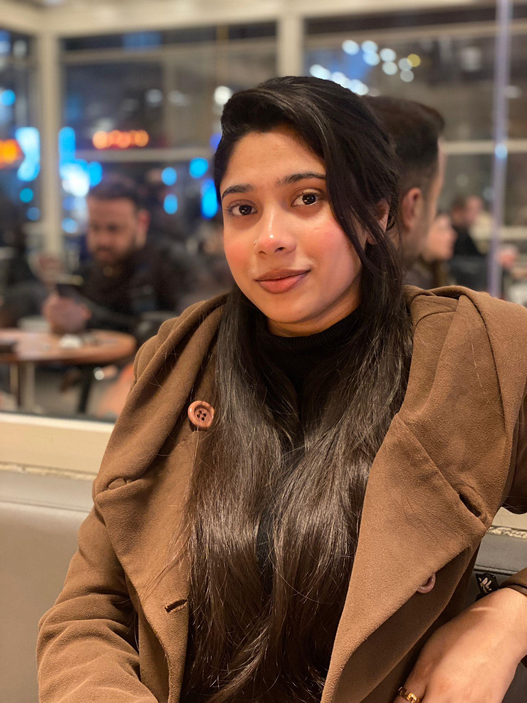

Shahajina Akter Orpy

Summary
Motivated Computer Engineering student with a solid background in programming, database management, and digital design.
Education
-
Bachelor of Science in Computer Engineering – İstanbul Topkapı University
Expected Graduation: 2028
Work Experience
-
Freelance Graphic Designer & Web Assistant
Remote | 2024 – Present
- Designed digital assets, brand identities, and promotional materials.
- Assisted in website layout planning and multi-language content management.
Skills
- Programming Languages: C, Java, Verilog, HTML
- Databases: SQL Server, Relational Database Design
- Tools: VS Code, Git, Adobe Illustrator
Awards & Certifications
- English Proficiency (TOEFL).
- Turkish Proficiency.
- Volunteer: Global Youth Diplomacy Summit
Other Details